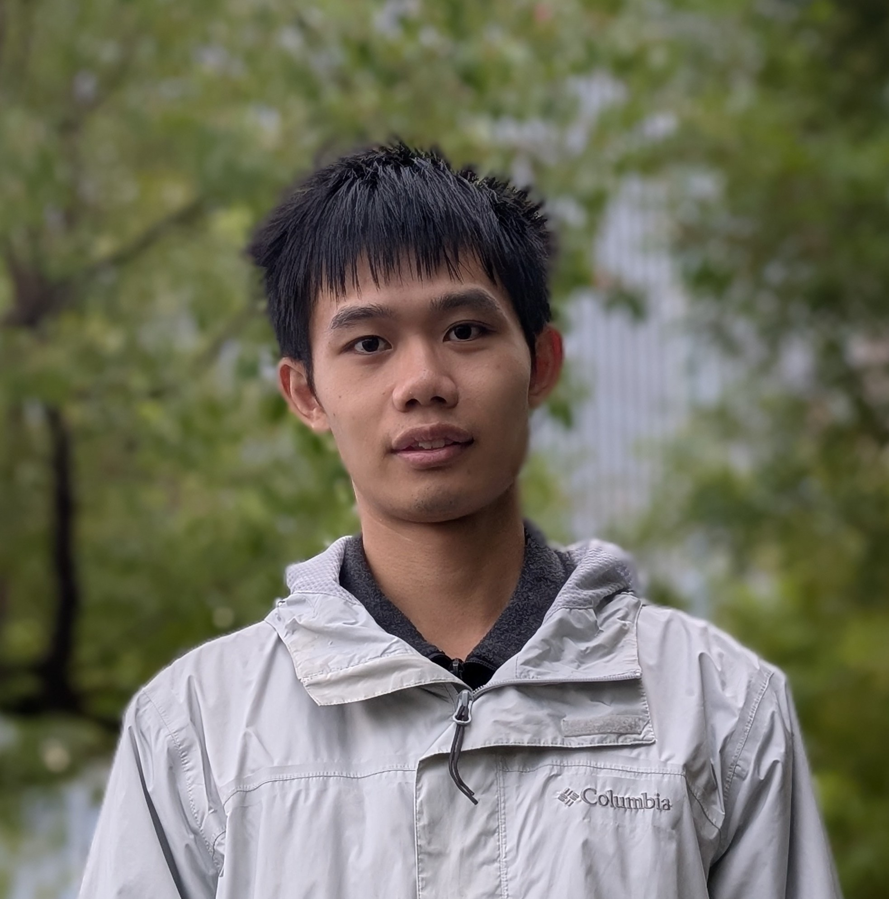

Shiwei Pan
潘世维
About Me
I am a student at Tongji University in Shanghai, specializing in robot control, machine learning, and intelligent manufacturing. My research focuses on integrating robotics and manufacturing to create smarter, more efficient production systems. I am also passionate about leveraging intelligent technologies to optimize production management, making traditional manufacturing processes more intelligent and streamlined.
Education
- Tongji University 2022.09-2026.06
Undergraduate in Intelligent Manufacturing Engineering
GPA 4.59/5
Awards
- Outstanding Student, awarded National Scholarship
- Second Prize in Shanghai Undergraduate Mathematical Contest in Modeling
- Bronze Award in The University Physics Competition
Work Experience
- Upwork (2023.10-Present) - Top Rated Freelancer
- Conducted market research on the domestic humanoid robot industry for a Silicon Valley startup, contacted domestic manufacturers, compiled high-quality analytical reports, and supported the company’s strategic planning.
- Scraped and processed large volumes of English movie and TV scripts, using Python to extract structured dialogue from PDFs, greatly enhancing the efficiency and accuracy of data processing through automation.
- Sapien.io (2023.12-2024.09) - Project Manager
- Developed web scraping and real-time monitoring of personnel data using Selenium on the annotation platform, conducted data analysis and mining, intelligently allocated human resources based on project progress, and identified outlier annotators, optimizing HR management processes. Generated detailed project progress reports, resulting in a 20% improvement in team efficiency.
- Reverse-engineered APIs to scrape data, implemented deduplication via hash values, and set up an OCR annotation platform using Label Studio. Leveraged Google Cloud's pre-recognition capabilities to significantly improve annotation efficiency, reducing project delivery time by 15%.
Projects
- Tongji University Key Research Project—Intelligent Construction on the Lunar Surface
- Built a simulation environment for a masonry robot using Nvidia Isaac Sim, enabling automated data synthesis and sensor simulation. Developed and optimized forward and inverse kinematics solvers and trajectory planning algorithms for a 4-DOF robotic arm, improving operation precision and efficiency.
- Advised German exchange students on designing a differential drive car's MPC trajectory tracking controller, and conducted simulation testing using Mujoco, ensuring control algorithm stability and reliability in complex environments, pushing forward breakthroughs in key project technologies.
- Design of a Dual-Motor Power Coupling System for the Next-Generation Actuation System
- Implemented closed-loop speed control and monitoring for motors using STM32 development board.
- Designed and implemented a dynamic web application using Tabler.js, creating a real-time data control platform successfully applied in remote motor monitoring and digital twin systems via bus and serial ports.
Skills
Data Scraping and Analytics, Machine Learning, Mechanical Engineering, Embedded Systems, Industrial Internet and Big Data, Python, SQL, Project Management, Cross-Cultural Communication